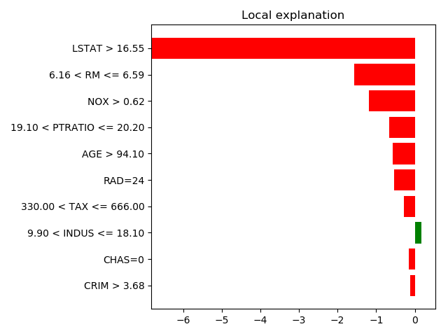
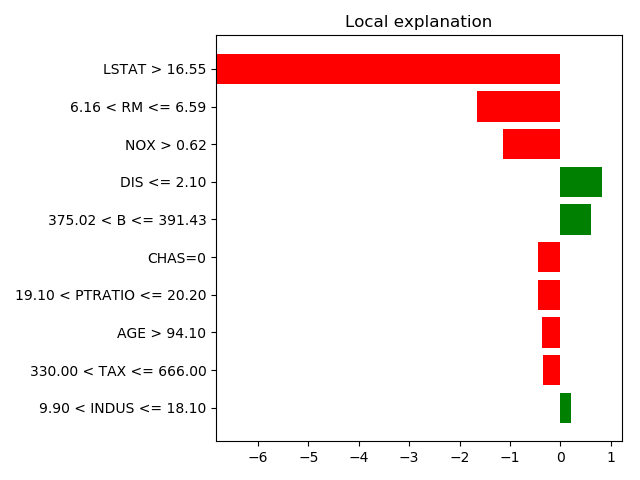
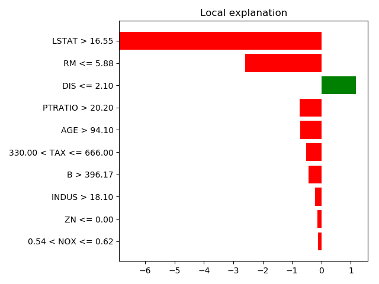

Note
Click here to download the full example code or run this example in your browser via Binder
2.4. Black-box interpretation of models: LIME¶
See also skater: a more modern variant relying on heavier dependencies https://github.com/datascienceinc/Skater
First we need to install lime with the following shell line:
$ pip install --user lime
Lime uses the notion of “explainers”, for different types of data, tabular, image, text.
2.4.1. Regression on tabular data: factors of prices of houses¶
Load the data, create and fit a regressor
from sklearn import datasets, ensemble, model_selection
boston = datasets.load_boston()
X_train, X_test, y_train, y_test = model_selection.train_test_split(
boston.data, boston.target)
regressor = ensemble.RandomForestRegressor()
regressor.fit(X_train, y_train)
Inspect predictions for a few houses
For this, separate out the categorical features:
import numpy as np
categorical_features = [i for i, col in enumerate(boston.data.T)
if np.unique(col).size < 10]
Now use a lime explainer for tabular data
from lime.lime_tabular import LimeTabularExplainer
explainer = LimeTabularExplainer(X_train,
feature_names=boston.feature_names,
class_names=['price'],
categorical_features=categorical_features,
mode='regression')
# Now explain a prediction
exp = explainer.explain_instance(X_test[25], regressor.predict,
num_features=10)
exp.as_pyplot_figure()
from matplotlib import pyplot as plt
plt.tight_layout()
print(exp.as_list())
Out:
[('LSTAT <= 7.31', 8.344068170443192), ('RM > 6.59', 6.4503544556412526), ('PTRATIO <= 17.40', 0.76661078000719929), ('AGE <= 46.95', 0.64963532342515296), ('0.45 < NOX <= 0.54', 0.47355081823542772), ('CHAS=0', -0.43864909278125713), ('375.02 < B <= 391.43', 0.38813309342646213), ('ZN <= 0.00', 0.36866525361689439), ('RAD=8', -0.24936488783907498), ('3.20 < DIS <= 4.84', -0.16193513037151852)]
Explain a few more predictions
for i in [7, 50, 66]:
exp = explainer.explain_instance(X_test[i], regressor.predict,
num_features=10)
exp.as_pyplot_figure()
plt.tight_layout()
- 
- 
- 
Total running time of the script: ( 0 minutes 1.453 seconds)